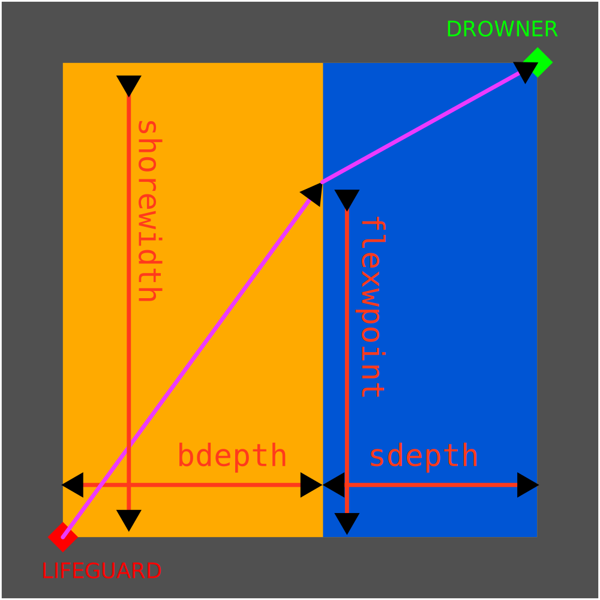

The Optimal Path
Questions:
I) Turtle in a grid
- Write
absmove(), a function that moves a turtle to a given absolute position (x,y). Use conversion/scaling units as needed. - Improve on it by adding a third parameter
writethat, if true, draws the path of the turtle, if false does not. - Improve on the function by returning the distance covered in pixels by the turtle.
- Write a
move()function that moves the turtle relative to it's current position. If the turtle is at position (a,b), it should arrive at (a+x,b+y); - Improve the function by adding a write parameter and returning the distance covered as before.
- Improve
absmove()andmove()by making them move the turtle in a straight line to the aimed position, if it's not yet the case.
import turtle;
bob = turtle.Turtle()
pperm = 20 # pixels per meter
turtlecoords= [0.0,0.0]
def absmove(x,y):
global turtlecoords
#return to origin
bob.fd(-turtlecoords[0] * pperm)
bob.lt(90)
bob.fd(-turtlecoords[1] * pperm)
bob.rt(90) # always oriented facing east at the end
#move to new position
bob.fd(x* pperm)
bob.lt(90)
bob.fd(y* pperm)
bob.rt(90) # always oriented facing east at the end
turtlecoords = [x,y] #retain new turtle position
turtle.mainloop()#keeps the window open
import turtle;
bob = turtle.Turtle()
pperm = 20 # pixels per meter
turtlecoords= [0.0,0.0]
def absmove(x,y,write):
if(write):
bob.pd()
else:
bob.pu()
global turtlecoords
#return to origin
bob.fd(-turtlecoords[0] * pperm)
bob.lt(90)
bob.fd(-turtlecoords[1] * pperm)
bob.rt(90) # always oriented facing east at the end
#move to new position
bob.fd(x* pperm)
bob.lt(90)
bob.fd(y* pperm)
bob.rt(90) # always oriented facing east at the end
turtlecoords = [x,y] #retain new turtle position
turtle.mainloop()#keeps the window open
import math
import turtle
bob = turtle.Turtle()
pperm = 20 # pixels per meter
turtlecoords= [0.0,0.0]
def absmove(x,y,write):
distancecovered = 0 # in meters
if(write):
bob.pd()
else:
bob.pu()
global turtlecoords
#return to origin
bob.fd(-turtlecoords[0] * pperm)
distancecovered += math.fabs(turtlecoords[0])
bob.lt(90)
bob.fd(-turtlecoords[1] * pperm)
distancecovered += math.fabs(turtlecoords[1])
bob.rt(90) # always oriented facing east at the end
#move to new position
bob.fd(x* pperm)
distancecovered += math.fabs(x)
bob.lt(90)
bob.fd(y* pperm)
distancecovered += math.fabs(y)
bob.rt(90) # always oriented facing east at the end
turtlecoords = [x,y] #retain new turtle position
return distancecovered
turtle.mainloop()#keeps the window open
import math
import turtle;
bob = turtle.Turtle()
pperm = 20 # pixels per meter
turtlecoords= [0.0,0.0]
def move(x,y,write):
distancecovered = 0 # in meters
if(write):
bob.pd()
else:
bob.pu()
global turtlecoords
#move to new position
bob.fd(x* pperm)
distancecovered += math.fabs(x)
bob.lt(90)
bob.fd(y* pperm)
distancecovered += math.fabs(y)
bob.rt(90) # always oriented facing east at the end
turtlecoords[0] += x
turtlecoords[1] += y
return distancecovered
turtle.mainloop()#keeps the window open
import math
import turtle;
bob = turtle.Turtle()
pperm = 20 # pixels per meter
turtlecoords= [0.0,0.0]
def move(x,y,write = True):
if(write):
bob.pd()
else:
bob.pu()
global turtlecoords
#norm is the distance to cover:
norm = math.sqrt((x**2) + (y**2))
if(norm == 0):
return 0;
#get the normalized vector for direction
xnorm = x / norm
ynorm = y / norm
#get the angle
radianangle = math.acos(xnorm)
degangle = radianangle * 180 / math.pi
angle = degangle
if(ynorm < 0):
angle = 360 - angle
bob.lt(angle)
bob.fd(norm * pperm)
bob.rt(angle)
turtlecoords[0] += x
turtlecoords[1] += y
return norm
def absmove(x,y,write = True):
xrel = x - turtlecoords[0]
yrel = y - turtlecoords[1]
return move(xrel,yrel,write)
turtle.mainloop()#keeps the window open
II) The lifeguard dichotomy

shorewidth, bdepth,sdepth and flexpoint should be expressed in meters. beachspeed and seaspeed should be expressed in meters per second. flexpoint is the determining factor to find the the quickest path.
- Set variables for the constants that are relevant to this part of the problem, and make the turtle draw the beach.
- Write a function lifeguardpath() that takes a parameter flexpoint and draws the path the lifeguard would take.
- Improve that function by making it return the distance the lifeguard covers
- Improve that function by making it return instead, the time the lifeguard would take along that path.
#using move and absmove from the previous part #variables shorewidth = 20 bdepth = 5 sdepth = 5 beachspeed = 2.68 seaspeed = 1.5 #Draws the beach absmove(bdepth,0) absmove(bdepth,shorewidth) absmove(bdepth,0,False) absmove(bdepth+sdepth,0) absmove(bdepth+sdepth,shorewidth) absmove(0,shorewidth) absmove(0,0)
def lifeguardpath(flexpoint):
beachdist = absmove(bdepth,flexpoint)
waterdist = absmove(bdepth+sdepth,shorewidth)
return (beachdist/beachspeed)+(waterdist/seaspeed)
Use the dichotomy method to find the solution to the lifeguard's problem.
def dichotomy(resolution):
index = 0.5
span = 0.25
val = lifeguardpath(shorewidth * index)
for i in range(resolution):
minindex = max(0,index - span)
maxindex = min(1,index + span)
maxval = lifeguardpath(shorewidth * maxindex)
minval = lifeguardpath(shorewidth * minindex)
if(minval > val and maxval > val):
span = span /2
else:
if (minval < val):
val = minval
index = minindex
elif(maxval < val):
val = maxval
index= maxindex
bob.color((0,1,0))
bob.width(2)
lifeguardpath(shorewidth * index)
III) The systematic fisherman
- Write a method that transforms the
faxstring into a list of coordinates(a list of lists of integers). - Create a route variable that represents the list of successive points you take to cover all fishing nets.
- Create a function that takes that route as a parameter and draws out, with turtle, the path you would take.
- Find the best possible route and draw it out.
def faxreader(fax):
fax = fax.replace("'faxing issue...'",'')
fax = fax.replace(' ','')
fax = fax.replace(',,',',')
fax = fax.replace('[','')
fax = fax.replace(']','')
netsdata = []
strstamp = ''
for i in fax:
if i != ',':
strstamp += i
else:
val = int(strstamp)
if(len(netsdata) > 0):
if len(netsdata[-1]) < 2:
netsdata[-1].append(val)
else:
netsdata.append([val])
else:
netsdata.append([val])
strstamp = ''
if strstamp != '':
netsdata[-1].append(int(strstamp))
return netsdata
netdata = faxreader(fax)
#a route is a sequence of points
#each point is identifable via its index in the netdata list of points
route = []
for i in range(len(netdata)):
route.append(i)
def takeroute(netdata,aroute):
routelength = 0
for coords in aroute:
x = netdata[coords][0]
y = netdata[coords][1]
routelength += absmove(x,y,False)
routes = itertools.permutations(range(len(netdata)))
minlength= len(netdata) * 2 * maxnets
minroute = route[0]
print(type(routes))
counter = 0
maxposs = math.factorial(len(netdata))
for i in routes:
counter+=1
print(str(counter)+ " out of " + str(maxposs))
length = takeroute(netdata,i,False)
if length < minlength:
minlength = length
minroute = i
takeroute(netdata,minroute,True)